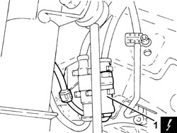
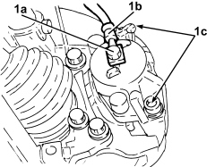
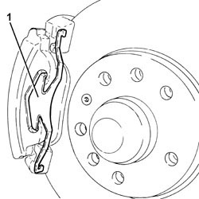
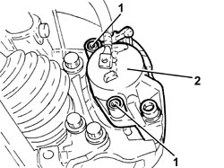
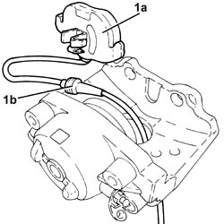
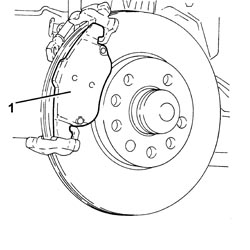
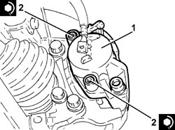
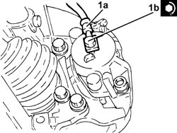
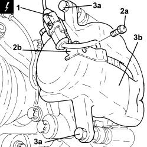
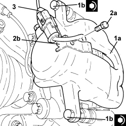

3310A30 FRONT BRAKE CALIPER (ONE) - R.R
- Path
- Procedures > 33 BRAKES > 3310 DISC BRAKES > 3310A FRONT DISC BRAKES > 3310A30 FRONT BRAKE CALIPER (ONE) - R.R
- Kind
- repair procedure (removal / refitting; the operation number is the code)
- Applies to
- all engines; all production periods
- Interactive page
- https://sloeber94.github.io/elrnDB-fCrm/en/#/194000469
Applies to: engines: 1.8, 2.2, 1.9 JTD 8v; all production periods
 Removing
Removing
 Refitting
Refitting- Position the vehicle on a lift.
- Make sure that the ignition key is in the OFF position, then disconnect the battery terminal (-).
Description | Connector | |
|---|---|---|
- | Battery |
- Replace the brake-clutch fluid reservoir plug using the tool.
Tool | Description | Function | Validity |
|---|---|---|---|
2000001400 | Plug | Brake/clutch fluid reservoir cap |
Op. 4450B02 LEFT FRONT WHEEL - R.R
1. Disconnect the electrical connection for the brake pad wear sensor and release the wiring from the fastenings.
Description | Connector | |
|---|---|---|
1 | Left brake pad wear sensor (switch) |

Applies to: engines: 1.8, 2.2, 1.9 JTD 8v; all production periods
1. Undo the connector (1a) and disconnect the flexible pipe (1b) from the brake caliper.

Applies to: engines: 1.8, 2.2, 1.9 JTD 8v; all production periods
1. Remove the brake caliper traction spring.

Applies to: engines: 1.8, 2.2, 1.9 JTD 8v; all production periods
1. Remove the plugs and unscrew the brake caliper bolts.
2. Remove the brake caliper complete with inner plate.

Applies to: engines: 1.8, 2.2, 1.9 JTD 8v; all production periods
1. Working at the bench, remove the inner plate (1a) complete with sensor from the brake caliper (1b).

Applies to: engines: 1.8, 2.2, 1.9 JTD 8v; all production periods
1. Remove the outer pad from the brake caliper bracket.

Applies to: engines: 1.8, 2.2, 1.9 JTD 8v; all production periods
Refitting
Removing- Push the brake caliper piston into its housing using a suitable tool.
- Grease the brake caliper and bracket in the areas of the pad support surfaces.
- Place the outer pad back in its housing on the brake caliper bracket.
- Place the inner pad complete with wear sensor in its housing on the brake caliper.
1. Refit the brake caliper with inner pad.
2. Tighten the brake caliper bolts to the specified torque and fit the plugs.
Component | Fastening | dia | Value (daNm) | Validity |
|---|---|---|---|---|
Front brake calipers | Bolt | - | (bracket side) 2.5 - 3.0 | 1.8 2.2 1.9 JTD 8v |

Applies to: engines: 1.8, 2.2, 1.9 JTD 8v; all production periods
- Refit the brake caliper traction spring in its seat.
1. Connect the flexible pipe (1a) to the brake caliper and tighten the connector (1b) to the recommended torque.
Component | Fastening | dia | Value (daNm) | Validity |
|---|---|---|---|---|
Flexible pipe to front brakes | Connector | M12 | (brake caliper side) 3.5 - 4.5 | 1.8 2.2 1.9 JTD 8v |

Applies to: engines: 1.8, 2.2, 1.9 JTD 8v; all production periods
- Connect the electrical connection for the brake pad wear sensor and fasten the electrical wiring.
Op. 4450B02 LEFT FRONT WHEEL - R.R
- Replace the tool with the brake-clutch fluid reservoir plug.
Tool | Description | Function | Validity |
|---|---|---|---|
2000001400 | Plug | Brake/clutch fluid reservoir cap |
- Connect the negative battery terminal.
Op. 0010T64 BRAKE AND/OR CLUTCH FLUID CHECK LEVEL AND TOP UP AS NECESSARY
Op. 0010T65 HYDRAULIC BRAKE SYSTEM - BLEED AIR
- Remove the vehicle from the lift.
Applies to: engines: 1.9 JTD 16v, 2.4 JTD 20v; all production periods
Removing
Refitting- Position the vehicle on a lift.
- Make sure that the ignition key is in the OFF position, then disconnect the battery terminal (-).
Description | Connector | |
|---|---|---|
- | Battery |
Op. 4450B02 LEFT FRONT WHEEL - R.R
Op. 7055B90 LEFT FRONT WHEEL ARCH LINER - R.R.
Op. 3340B10 HOSE TO L/H OR R/H FRONT BRAKES (ONE) - R+R
1. Disconnect the electrical connection for the brake pad wear sensor.
Description | Connector | |
|---|---|---|
1 | Left brake pad wear sensor (switch) |
2. Undo the bolt (2a) for the bracket (2b) securing the brake pad wear sensor electrical connection.
3. Undo the bolts (3a) and remove the brake caliper (3b).

Applies to: engines: 1.9 JTD 16v, 2.4 JTD 20v; all production periods
Refitting
Removing1. Position the brake caliper bracket (1a) in its housing and secure it tightening the bolts (1b) to the recommended torque.
Component | Fastening | dia | Value (daNm) | Validity |
|---|---|---|---|---|
Front brake calipers | Bolt | M8x1 | (bracket side) 3.1 - 3.8 | 1.9 JTD 16v 2.4 JTD 20v |
2. Tighten the bolt (2a) for the bracket (2b) securing the brake pad wear sensor electrical connection.
3. Connect the electrical connection for the brake pad wear sensor.

Applies to: engines: 1.9 JTD 16v, 2.4 JTD 20v; all production periods
Op. 3340B10 HOSE TO L/H OR R/H FRONT BRAKES (ONE) - R+R
Op. 0010T64 BRAKE AND/OR CLUTCH FLUID CHECK LEVEL AND TOP UP AS NECESSARY
Op. 0010T65 HYDRAULIC BRAKE SYSTEM - BLEED AIR
Op. 7055B90 LEFT FRONT WHEEL ARCH LINER - R.R.
Op. 4450B02 LEFT FRONT WHEEL - R.R
- Connect the negative battery terminal.
- Remove the vehicle from the lift.
Topics linked from this page (7)
- 0010T64 BRAKE AND/OR CLUTCH FLUID CHECK LEVEL AND TOP UP AS NECESSARY
- 0010T65 HYDRAULIC BRAKE SYSTEM - BLEED AIR
- 3340B10 HOSE TO L/H OR R/H FRONT BRAKES (ONE) - R+R
- 4450B02 LEFT FRONT WHEEL - R.R
- 7055B90 LEFT FRONT WHEEL ARCH LINER - R.R.
- A001 BATTERY
- K020 LEFT BRAKE PAD WEAR SENSOR (SWITCH)